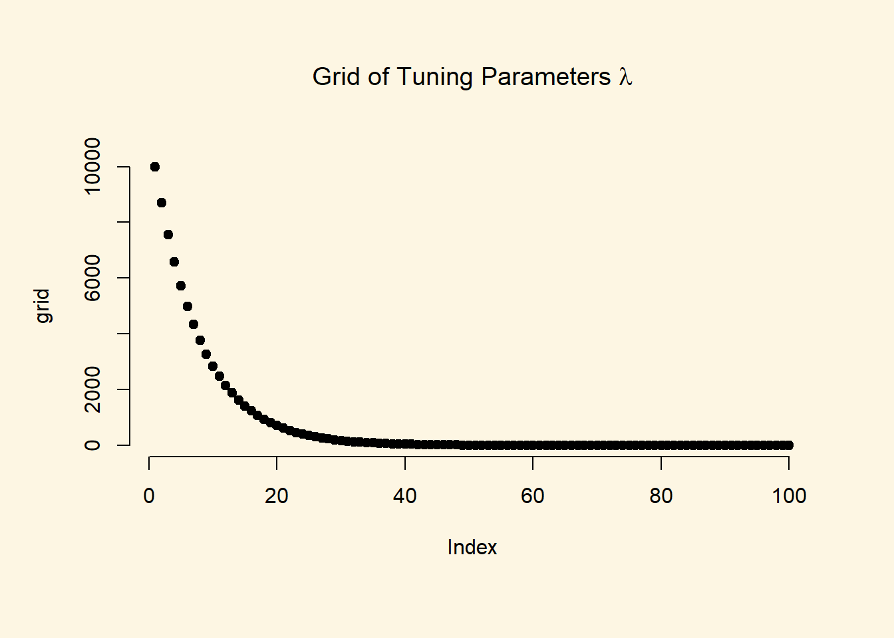
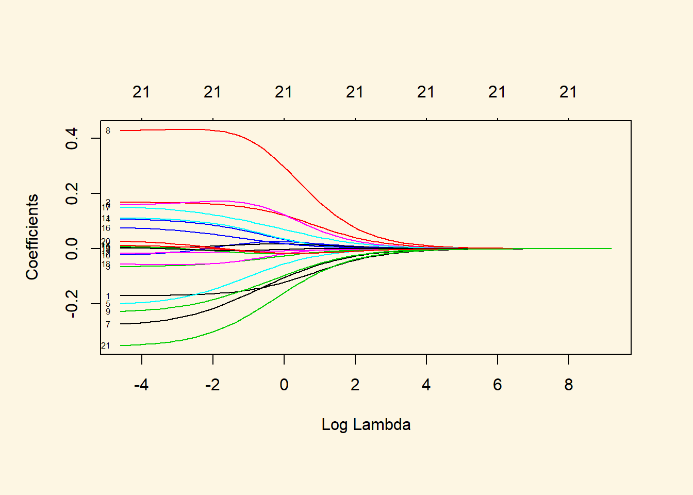
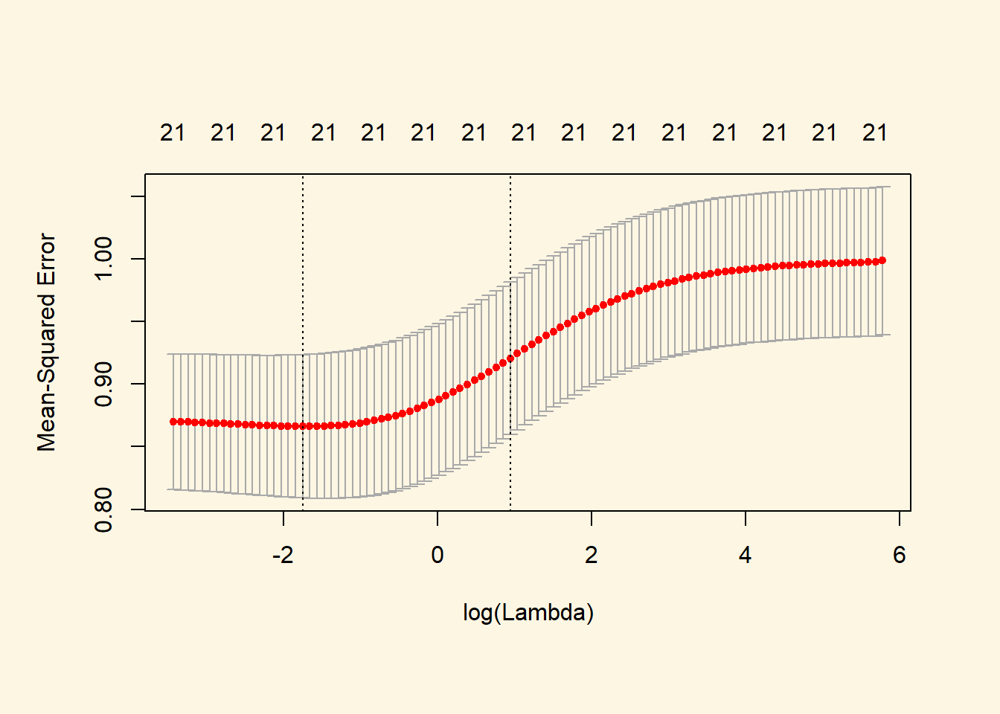
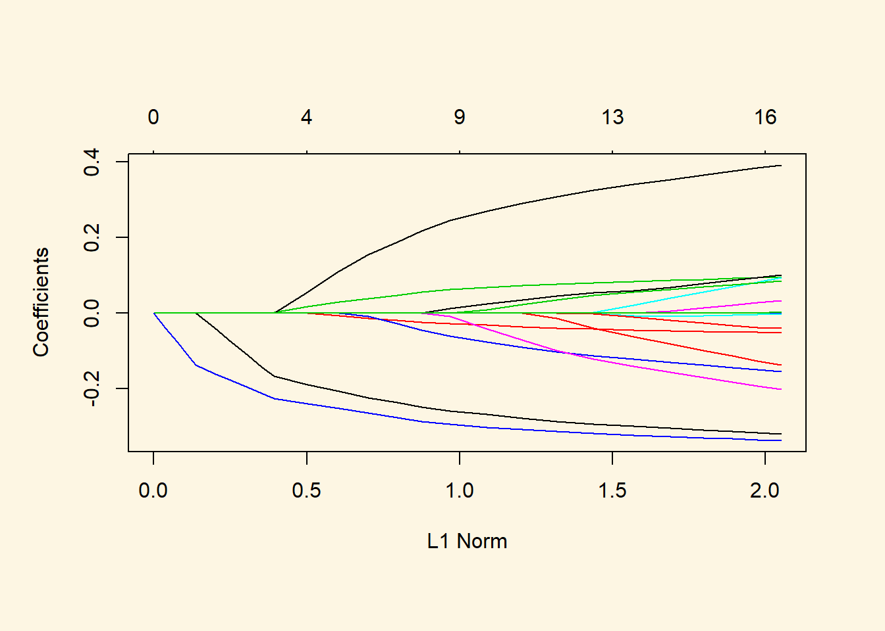
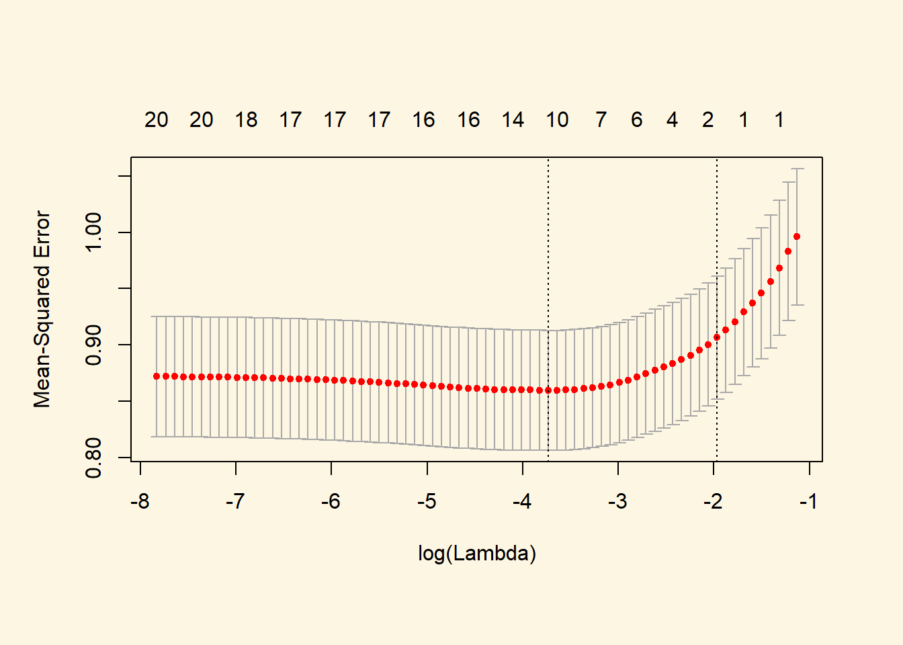

Chapter 5 Regularisation
5.1 Seminar
5.1.1 Ridge Regression and the Lasso
We start by clearing our workspace, loading the foreigners data, and doing the necessary variable manipulations. The data is available here.
We then need to normalize all numeric variables to put them on the same scale. Regularization requires that variables are comparable.
# clear workspace
rm(list=ls())
# load foreigners data
load("your directory/BSAS_manip.RData")
head(data2)
# we declare the factor variables
data2$urban <- factor(data2$urban, labels = c("rural", "more rural", "more urban", "urban"))
data2$RSex <- factor(data2$RSex, labels = c("Male", "Female"))
data2$health.good <- factor(data2$health.good, labels = c("bad", "fair", "fairly good", "good") )
# categorical variables
cat.vars <- unlist(lapply(data2, function(x) is.factor(x) | all(x == 0 | x==1) | all( x==1 | x==2) ))
# normalize numeric variables
data2[, !cat.vars] <- apply(data2[, !cat.vars], 2, scale)In order to run ridge regression, we create a matrix from our dataset using the model.matrix() function. We also need to remove the intercept from the resulting matrix because the function to run ridge regression automatically includes one. Furthermore, we will use the subjective rate of immigrants as response. Consequently, we have to remove over.estimate as it measures the same thing. Lastly, the party affiliation dummies are mutually exclusive, se we have to exclude the model category Cons.
# covariates in matrix form but remove the intercept, over.estimate, and Cons
x <- model.matrix(IMMBRIT ~ . -1 -over.estimate -Cons, data2)
# check if it looks fine
head(x) RSexMale RSexFemale RAge Househld Lab SNP Ukip BNP GP
1 1 0 0.0144845 -0.2925308 1 0 0 0 0
2 0 1 -1.8065476 0.4540989 0 0 0 0 0
3 0 1 0.5835570 -1.0391604 0 0 0 0 0
4 0 1 1.5509804 -0.2925308 0 0 0 0 0
5 0 1 0.9819078 -1.0391604 0 0 0 0 0
6 1 0 -1.1236606 1.2007285 0 0 0 0 0
party.other paper WWWhourspW religious employMonths urbanmore rural
1 0 0 -0.5324636 0 -0.203378 0
2 1 0 -0.1566702 0 -0.203378 0
3 1 0 -0.5324636 0 5.158836 0
4 1 1 -0.4071991 1 -0.203378 0
5 1 0 -0.5324636 1 -0.203378 0
6 1 1 1.0959747 0 -0.203378 0
urbanmore urban urbanurban health.goodfair health.goodfairly good
1 0 1 1 0
2 0 1 0 1
3 1 0 0 0
4 0 0 0 0
5 1 0 0 0
6 0 0 0 1
health.goodgood HHInc
1 0 0.7357918
2 0 -1.4195993
3 1 -0.1263647
4 1 -0.3419038
5 1 -0.1263647
6 0 -0.12636475.1.1.1 Ridge Regression
The glmnet package provides functionality to fit ridge regression and lasso models. We load the package and call glmnet() to perform ridge regression. Before being able to run this, we have to install the package like so: install.packages("glmnet").
The performance of ridge depends on the right choice of lambda. A tuning parameter is a parameter that we need to set and we need to set correctly. We do this by trying different values. All different values are what we refer to as our grid.
Loading required package: MatrixLoading required package: foreachLoaded glmnet 2.0-18# tuning parameter
grid <- 10^seq(4, -2, length = 100)
plot(grid, bty = "n", pch = 19,
main = expression(paste("Grid of Tuning Parameters ", lambda)))
We now run ridge regression. We tune lambda and set alpha to 0 which means we carry out ridge regression (instead as for instance the Lasso or the Elastic Net).
# run ridge; alpha = 0 means do ridge
ridge.mod <- glmnet(x, y, alpha = 0, lambda = grid)
# coefficient shrinkage visualized
plot(ridge.mod, xvar = "lambda", label = TRUE)
the object ridge.mod contains a set of coefficients for each of the lambdas which we can access by runing the coef() functio on the object ridge.mod. We tried 100 lambda values and therefore we get 100 coefficient sets. The object is a matrix where rows are variables and columns are the coefficients based on the chosen lambda values.
[1] 22 100We can look at the coefficients at different values for \(\lambda\). Here, we randomly choose two different values and notice that smaller values of \(\lambda\) result in larger coefficient estimates and vice-versa.
[1] 0.1629751 (Intercept) RSexMale RSexFemale
-0.061607390 -0.160606935 0.159900421
RAge Househld Lab
-0.051728204 0.082363992 -0.138922683
SNP Ukip BNP
0.172199820 -0.206749980 0.425986910
GP party.other paper
-0.176955926 0.008250000 0.088331267
WWWhourspW religious employMonths
-0.012922053 0.010790919 -0.001149770
urbanmore rural urbanmore urban urbanurban
-0.009100653 0.049660346 0.119249438
health.goodfair health.goodfairly good health.goodgood
-0.051779228 -0.006372962 0.002867504
HHInc
-0.291172989 [1] 0.6911836[1] 43.28761 (Intercept) RSexMale RSexFemale
-0.0024035442 -0.0086089993 0.0086089995
RAge Househld Lab
-0.0009024882 0.0009302020 -0.0016851561
SNP Ukip BNP
0.0051999098 -0.0051751362 0.0145257558
GP party.other paper
-0.0045065860 0.0018619440 0.0002790212
WWWhourspW religious employMonths
-0.0005069474 0.0015920318 -0.0017699007
urbanmore rural urbanmore urban urbanurban
-0.0014946533 0.0006218758 0.0040369054
health.goodfair health.goodfairly good health.goodgood
0.0002138639 0.0003043203 -0.0019519248
HHInc
-0.0072791705 [1] 0.02287352We can get ridge regression coefficients for any value of \(\lambda\) using predict.
# compute coefficients at lambda = s
predict(ridge.mod, s = 50, type = "coefficients")[1:nrow(coef(ridge.mod)), ] (Intercept) RSexMale RSexFemale
-0.0020916615 -0.0075062040 0.0075062041
RAge Househld Lab
-0.0007828438 0.0008050887 -0.0014604733
SNP Ukip BNP
0.0045109868 -0.0045029585 0.0126229971
GP party.other paper
-0.0039161618 0.0016221081 0.0002331180
WWWhourspW religious employMonths
-0.0004418724 0.0013894830 -0.0015446673
urbanmore rural urbanmore urban urbanurban
-0.0013036526 0.0005397837 0.0035149833
health.goodfair health.goodfairly good health.goodgood
0.0001920935 0.0002676711 -0.0017039940
HHInc
-0.0063276702 We would like to know which value of lambda gives us the model with the best predictive power. We use cross-validation on ridge regression by first splitting the dataset into training and test subsets.
We can choose different values for \(\lambda\) by running cross-validation on ridge regression using cv.glmnet().
set.seed(1)
# training data for CV to find optimal lambda, but then test data to estimate test error
cv.out <- cv.glmnet(x, y, alpha = 0, nfolds = 5)
# illustrate test MSE based on size of lambda
plot(cv.out)
[1] 0.1726934The best performing model is the one with \(\lambda =\) 0.1726934. We can also extract the mean cross-validated error of the best model.
[1] 0.86632225.1.1.2 The Lasso
The lasso model can be estimated in the same way as ridge regression. The alpha = 1 parameter tells glmnet() to run lasso regression instead of ridge regression. Lasso is often used more as a variable selection model because a large shrinkage parameter \(\lambda\) can cause coefficients of some variables to be exactly zero which means that those variables are excluded from the model.
Warning in regularize.values(x, y, ties, missing(ties)): collapsing to
unique 'x' values
Similarly, we can perform cross-validation using identical step as we did on ridge regression.
# cross-validation to pick lambda
set.seed(1)
cv.out <- cv.glmnet(x, y, alpha = 1, nfolds = 5)
plot(cv.out)
We select the best Lambda value and the cross-validation error.
[1] 0.8598552# compare to ridge regression
out <- glmnet(x, y, alpha = 1, lambda = grid)
lasso.coef <- predict(out, type = "coefficients", s = bestlam)[1:16, ]
lasso.coef[lasso.coef != 0] (Intercept) RSexMale RAge Househld
0.123666790 -0.290927784 -0.040834908 0.080195229
Lab SNP Ukip BNP
-0.109775668 0.001382463 -0.115410323 0.321492204
GP paper urbanmore rural
-0.033150926 0.044601323 -0.001227853